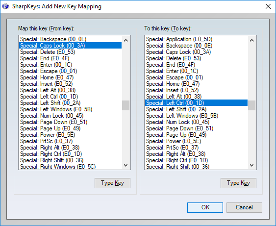
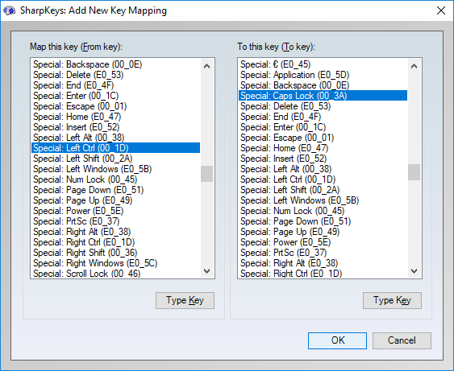
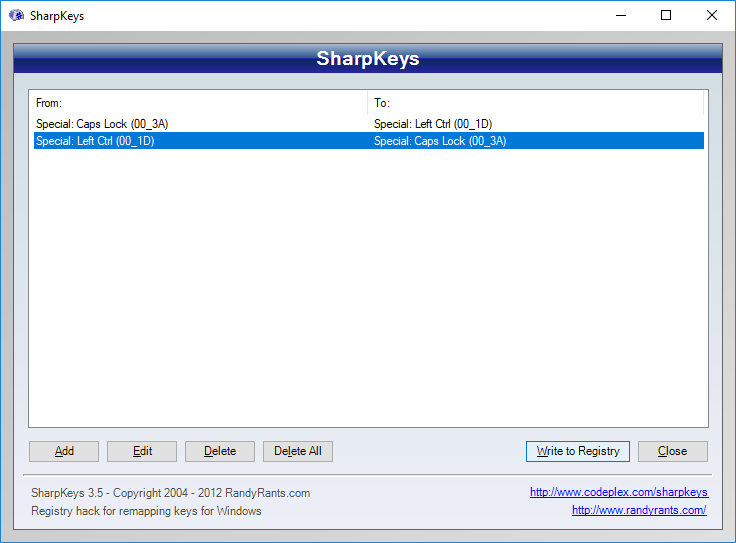

How to Use Emacs Style Key Binding in Windows 10
Yoichi Hariguchi
Software to Install
Enabling Emacs Style Key Binding
- Extract "Keyhac"
(say in
/cygdrive/c/Program\ Files/keyhac-176)
cd /cygdrive/c/Program\ Files/keyhac-176
mv -i _config.py dot.config.py
wget http://www.hariguchi.org/emacs-win10/config.py
Or download config.py and put it in
cd /cygdrive/c/Program\ Files/keyhac-176
- Run Keyhac.
Swapping Caps Lock and Left Control
This is not about Emacs like key binding itself, but some
people (like me) really want to have Control key on the left
next to `a'. ShapKeys is useful to swap Caps Lock and
Control and here is the procedure.
- Run "SharpKeys"
- Click "Add"
- Choose "Special: Caps Lock (00_3A)" in the "Map this key
(From key):" form, and "Special: Left Ctrl(00_1D)" in the "To
this key (To key):" form, then click "OK."

- Click "Add"
- Choose "Special: Left Ctrl(00_1D)" in the "Map this key
(From key):" form, and "Special: Caps Lock (00_3A)" in the "To
this key (To key):" form, then press "OK."

- The result should be like this.

- Click "Write to Registry."
- Click "Close."
- Reboot.
Now Caps Lock and Left Control are supposed to be swapped.
[Home]
Last modified: Fri Oct 6 04:32:23 PDT 2017